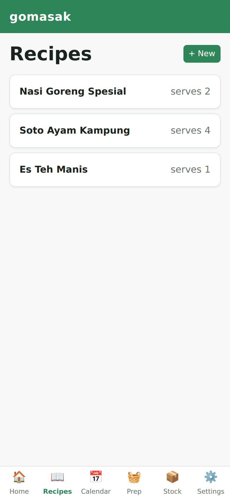
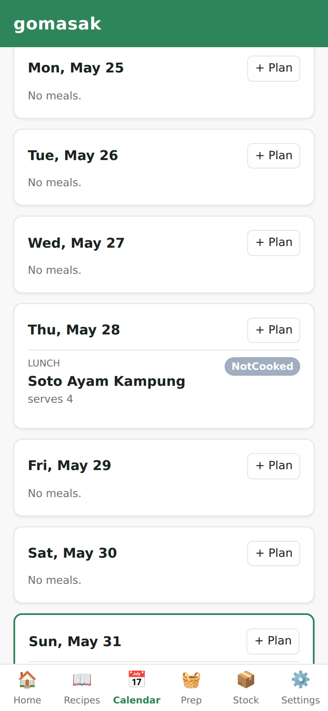
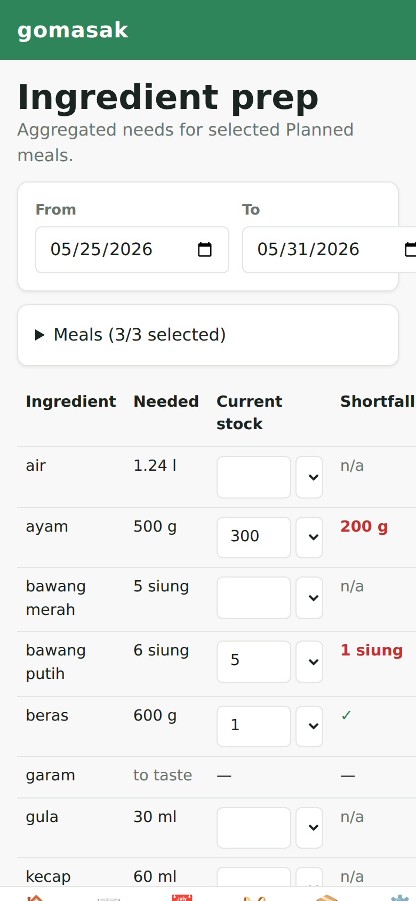
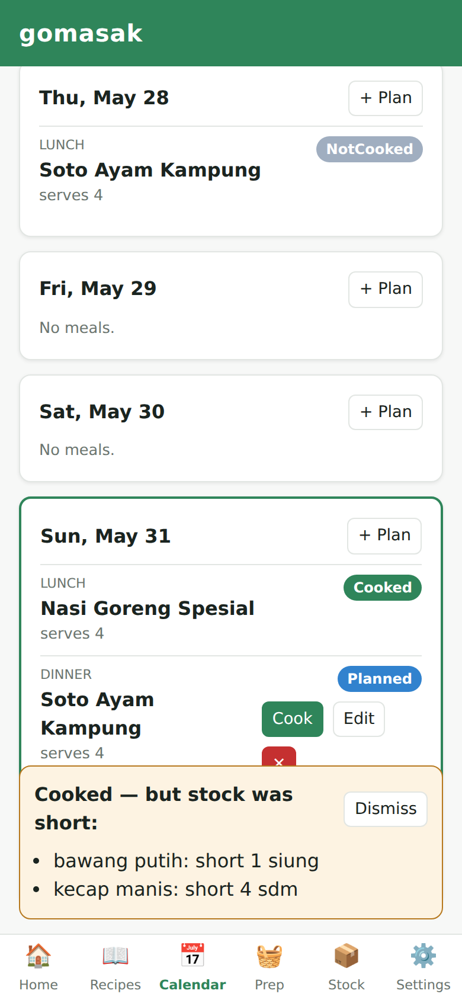
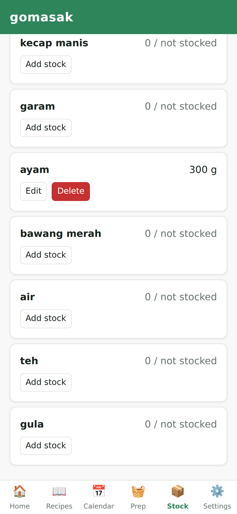

gomasak
From "what's for dinner?" to a cooked meal with honest stock.
The problem · a home cook's 3 real pain points
P1
Missing ingredient on cook day
"I plan a meal, but on the day I cook it, some ingredient is missing." Too late to shop.
P2
Forgetting what I can cook
"I forget the list of meals I know how to make," so deciding what to cook stalls.
P3
Tedious ingredient math
"Across several meals it's slow, error-prone work to total what I need vs. what I have."
⏱️
The key idea — run Prep at H-2 (two days before cook day). A shortfall you discover
on cook day is too late to fix; the same shortfall found two days out is just a shopping
order you place today, arriving with a day to spare.
The flow that solves it · Recipes → Calendar → Prep → Cook → Stock

Capture each dish once — the list becomes your living menu. Blank on what to cook? Browse it.
Solves P2
➜

Lay out the week: recipe + date + meal type, with optional serving scaling. Missed plans auto-mark NotCooked.
Sets up P1 & P3
➜

Auto-sums every ingredient across chosen meals (scaling + unit conversion) and subtracts stock → exact shortfall.
Solves P3 → P1
➜

Mark cooked → ingredients auto-deduct (floored at zero). A non-blocking notice flags anything you ran short on.
Closes P1
➜

Stock instantly reflects what you cooked, so the next Prep starts from the truth. The loop self-corrects.
Keeps it honest
Flow ↔ problem map
Cooking keeps stock honest (Step 5) → next Prep's shortfall is accurate (Step 3) → you never arrive at cook day short again.